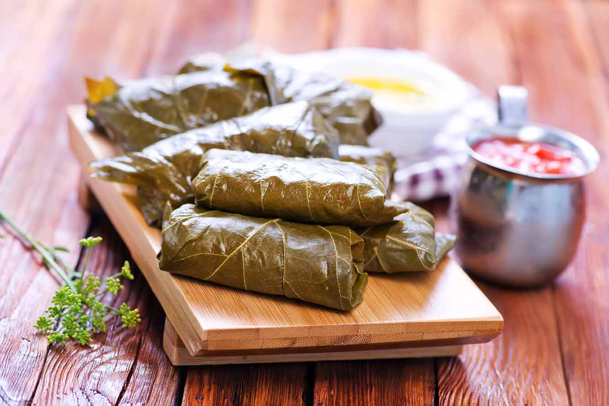

Cold-Served Dolmas

Description
Dolmas, or stuffed grape leaves, are staple dishes of the eastern Mediterranean. They are commonly stuffed with a lemon-flavored mixture of rice, onion, and ground lamb. They can be eaten cold or warm. Meat-filled dolmas are traditionally eaten warm, and rice-filled dolmas are best served cold with lemon juice and olive oil. Rolling dolmas can be very tricky, so don't get discouraged. Also, lining the pan when cooking dolmas is necessary to keep your grape leaves from burning.
This recipe has a prep time of 30 minutes, a cooking time of 50 minutes, and a chilling time of 2 hours. The approximate total time needed for this recipe is 3 hours and 20 minutes. This recipe results in 40 individual servings.
Ingredients
- 8oz grape leaves (1 jar, preserved grape leaves)
- 1 1/2 cups white rice, cooked
- 1 Tbsp olive oil
- 1 onion, diced
- 2 Tbsp pine nuts
- 1/4 cup currants, dried
- 1/4 tsp allspice
- 1 Tbsp fresh mint, chopped
- 1/2 cup fresh parsley, chopped
- 3/4 cup water
Steps
- Cook rice according to package instructions. Cool to room temperature before using.
- In a bowl, place cooked rice, currants, mint, parsley, and allspice. Mix well.
- In a small skillet, saute the onions and pine nuts in the olive oil until the onions are translucent. Remove from skillet and add to the rice mixture. Mix well.
- Rinse grape leaves and pat dry with a paper towel.
- Place grape leaf on a large cutting board.
- Place a heaping teaspoon of the rice mixture near the bottom of the leaf.
- Fold the bottom of the leaf over the rice, and bring the sides inwards following the guide you created.
- Roll tightly to form a cigar shape.
- Repeat this step until all other ingredients are used.
- Place seam side of the grape leaves down in a skillet lined with left over grape leaves.
- Pour water over the dolmas, and weigh down with a plate to prevent movement.
- Cover and cook on low for 50 minutes.
- Allow dolmas to cool in the pan prior to transferring to a serving platter.
- Refrigerate for about 2 hours before serving.